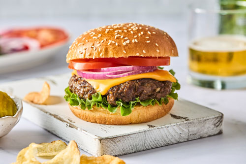

Cheese Burgers

Description:
Indulge in the ultimate comfort food with these mouthwatering
cheeseburgers. Juicy, flavorful beef patties topped with melted cheese,
nestled between soft burger buns and garnished with fresh toppings, these
cheeseburgers are the epitome of deliciousness. Satisfy your cravings and
experience the classic, irresistible combination of meat, cheese, and all
the fixings in every bite.
Ingredients:
- 1 pound ground beef
- Salt and pepper to taste
- 4 hamburger buns
- 4 slices of cheese
- Lettuce, tomato, onions, pickles (optional)
- Condiments of your choice (ketchup, mustard, mayonnaise)
Steps:
- Preheat grill or stovetop pan.
-
Season ground beef with salt and pepper, then shape into four patties.
-
Cook patties on the grill or stovetop pan to your desired level of
doneness.
-
Add cheese slices on top of each patty during the last minute of cooking
to melt.
- Toast hamburger buns on the grill or in a toaster.
-
Assemble your cheeseburgers by placing the cooked patty on the bottom
bun, and adding lettuce, tomato, onions, pickles, and condiments of your
choice.
- Place the top bun on the assembled burger.
- Serve and enjoy your delicious homemade cheeseburgers!